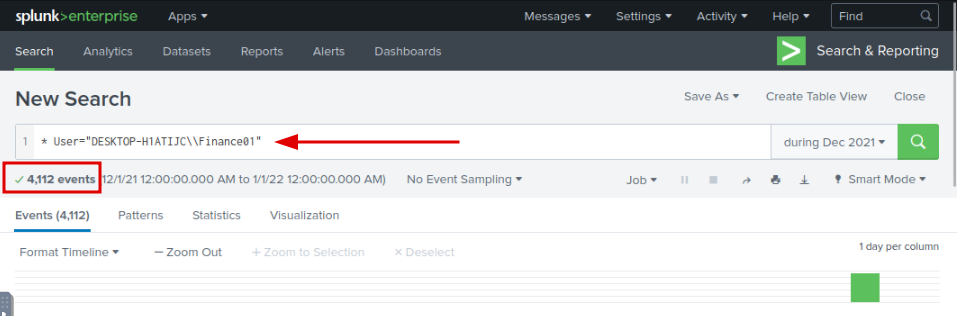
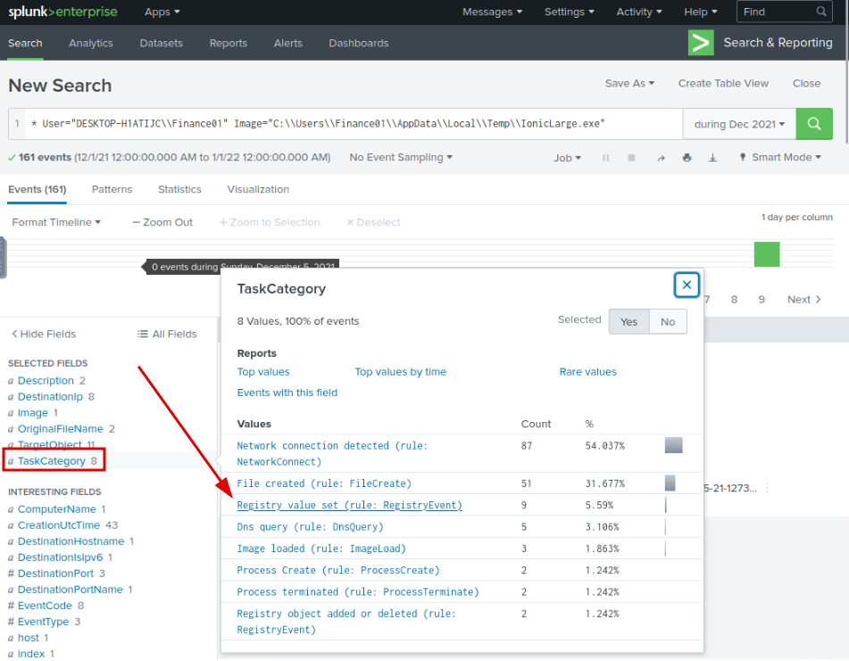

Scenario Notes:
• Widget LLC has some concerns with the endpoints in the Finance Dept.• Especially an endpoint for a recently hired Financial Analyst.
• The concern is that there was a period (December 2021) when the endpoint security product was turned off, but an official investigation was never conducted.
• Your manager has tasked you to sift through the events of Widget LLC's Splunk instance to see if there is anything that the customer needs to be alerted on.
Objective:
Identify any suspicious activities related to the Financial Analyst's endpoint during December 2021.Question 1:
A Web Browser Password Viewer executed on the infected machine. What is the name of the binary? Enter the full path.Explanation:
Firstly we will search for all the logs with the wild card “*”, and will select the timeframe to only “December 2021”.Based on this scenario we know that the user must an Financial Analyst, so he must be in the finance sector.Thanks to this “filter” we were able to go from 27k events to only 4k:Now we will only search for events that have “Web Browser Password Viewer” on their description Only 27 events left!Click on the image field and we will see that every event will have the same executable, that's our answerAnswer:
C:\Users\FINANC~1\AppData\Local\Temp\11111.exeQuestion 2:
What is listed as the company name?Explanation:
From the same search, inspect any event and you will see the name of the companyAnswer:
NirsoftQuestion 3:
Another suspicious binary running from the same folder was executed on the workstation. What was the name of the binary? What is listed as its original filename? (format: file.xyz,file.xyz)Explanation:
We will search for every binary on the same folder as the previous one IonicLarge.exe is the only one present, so we can search for the OriginalFileName and see that "PalitExplorer.exe" is the most prevalentAnswer:
IonicLarge.exe,PalitExplorer.exeQuestion 4:
The binary from the previous question made two outbound connections to a malicious IP address. What was the IP address? Enter the answer in a defang format.Explanation:
Search for DestinationIP of the previous binary and we will capture a IP Address that only made two connections There is only one IP Address that coincide with our what we were looking for, but let's confirm with VirusTotal if the IP is malicious8 Security Vendors classified this IP Address as malicious, must be the IP Address we were looking for, so let's defand it using CyberCheff{kind=link}
Answer:
2[.]56[.]59[.]42Question 5:
The same binary made some change to a registry key. What was the key path?Explanation:
Search for the name of the executable and on "TaskCategory" Select only the tasks were There was a value set on the registry key.Note: Using eventcode 13 was another pahway to get the answer.HKLM\SOFTWARE\Policies\Microsoft\Windows DefenderLet's check “TargetObject” and Oh wow the executable is making 8 different changes to the Windows Defender key path, this cannot be goodAnswer:
HKLM\SOFTWARE\Policies\Microsoft\Windows DefenderQuestion 6:
Some processes were killed and the associated binaries were deleted. What were the names of the two binaries? (format: file.xyz,file.xyz)Explanation:
First we will have to make an important distiction, tasks terminated are different from tasks killed, why does that matter? Because if you go to “TaskCategory” and search for Terminated processess you will not be able to see the process killed by the attackerIn order to see the process killed by the attacker you will have to search specificly for the command taskkill in the command line, to do that you can just search it on the search bar in Splunk
Answer:
phcIAmLJMAIMSa9j9MpgJo1m.exe,WvmIOrcfsuILdX6SNwIRmGOJ.exeQuestion 7:
The attacker ran several commands within a PowerShell session to change the behaviour of Windows Defender. What was the last command executed in the series of similar commands?Explanation:
From the question we know, a lot of commands were run within a PowerShell session, so let's search for themWe are looking for the last command executed, meaning the one with the most recent timestamp and he has to change Windows Defender, leaving no other event then this oneAnswer:
powershell WMIC /NAMESPACE:\\root\Microsoft\Windows\Defender PATH MSFT_MpPreference call Add ThreatIDDefaultAction_Ids=2147737394 ThreatIDDefaultAction_Actions=6 Force=TrueQuestion 8:
Based on the previous answer, what were the four IDs set by the attacker? Enter the answer in order of execution. (format: 1st,2nd,3rd,4th)Explanation:
Since we only want events that changed Windows Defender we will make that Query in order to make things more simple to lookAfter that we want the four IDs set by the attacker in cornological order from the first to the last, meaning from the lowest timestamp to the higher. Were do we look for the IDs?Right there, after every “ThreatIDDefaultAction_Ids”. After we acquire every IDs set by the attacker we will have our answerAnswer:
2147735503,2147737010,2147737007,2147737394Question 9:
Another malicious binary was executed on the infected workstation from another AppData location. What was the full path to the binary?Explanation:
Now we want to find an binary(image) on our infected workstation that's in another AppData location, to do that we will search for every AppData path.After this we will see the present imagesWow there are a lot of images how can we detect a malicios one? Clearly there are two prominent possibilities from the format of the question we already know that "EasyCalc.exe" path is our answer because he is the only one different from “AppData\Local\”. But in the real world we would have to confirm our suspicions, how do we do it? Well we investigate what it was used for, so it seems logical to check what were the descriptions usedIf you do not understand what are those things, can't see logic in them or they seem just strange. Congratulations, they are. A lot of forensics and log analysis is pattern recognition, if something does not make sense or is not inside your pattern recognition knowledge, it's time to either improve by learning a new good pattern or improve by learning a bad one. So the questions persits... How do we confirm it's malicious? If we search it on Google we will just get sketchy answers not confirming nor denying. So let's look for his "TaskCategory".There is a lot of of suspicious activity but what screams for attention is that one task where he set a value in RegistryKey.
Digging further we can see EasyCalc added a trusted CA to the Registry. It's time to ring the bells
Answer:
C:\\Users\\Finance01\\AppData\\Roaming\\EasyCalc\\EasyCalc.exeQuestion 10:
What were the DLLs that were loaded from the binary from the previous question? Enter the answers in alphabetical order. (format: file1.dll,file2.dll,file3.dll)Explanation:
Here we will have to investigate what DLLs were used by the previous binary. DLLs are a shared library dynamically linked to applications at runtime, meaning they are not compiled directly into the executable file of a program but are loaded and used as needed while the program is running. When a program needs access to a specific function, it dynamically links to the DLL, and the required code is loaded into memory, allowing the program to access the functionality.Knowing this, it is logical to see what binarys (images) were run from the previous binary.If this binary has what we are looking for it has to be inside the “TaskCategory” ”Image Loaded" From here we acquired every image loaded from the binary we were investigating. Eventhough TryHackMe asks to answer the question in alphabetical order. The Truth is they want it by inverse order of usage, meaning to us that it is from the first shown to the last like this:
Answer:
ffmpeg.dll,nw.dll,nw_elf.dllConclusion:
By methodically analyzing Splunk logs, I was able to uncover a series of activities that raised alarms within the Financial Analyst's endpoint. The combination of pattern recognition, focused queries, and contextual analysis proved instrumental in uncovering the suspicious events that occurred during December 2021. This investigation highlights the importance of continuous monitoring and thorough analysis to detect and mitigate potential security threats.1. Web Browser Password Viewer Binary:
An executable associated with a Web Browser Password Viewer was discovered on the infected machine. The binary's full path was identified as "C:\Users\FINANC~1\AppData\Local\Temp\11111.exe".
2. Company Name Identification:
Through diligent analysis, it was determined that the company name listed in the logs was "Nirsoft".
3. Suspicious Binary Execution:
An additional suspicious binary named "IonicLarge.exe" was executed from the same folder as the previous binary. This binary's original filename was listed as "PalitExplorer.exe" (format: IonicLarge.exe, PalitExplorer.exe).
4. Outbound Connections:
The "IonicLarge.exe" binary initiated two outbound connections to the malicious IP address "2[.]56[.]59[.]42".
5. Registry Key Alteration:
The same "IonicLarge.exe" binary was found to have made modifications to the Windows Defender registry key path, which was identified as "HKLM\SOFTWARE\Policies\Microsoft\Windows Defender".
6. Terminated Processes and Deleted Binaries:
Two processes were terminated, and the corresponding binaries were deleted. The binary names were "phcIAmLJMAIMSa9j9MpgJo1m.exe" and "WvmIOrcfsuILdX6SNwIRmGOJ.exe" (format: phcIAmLJMAIMSa9j9MpgJo1m.exe, WvmIOrcfsuILdX6SNwIRmGOJ.exe).
7. PowerShell Command Series:
The attacker executed a series of PowerShell commands to modify Windows Defender's behavior. The final command in this sequence was "powershell WMIC /NAMESPACE:\root\Microsoft\Windows\Defender PATH MSFT_MpPreference call Add ThreatIDDefaultAction_Ids=2147737394 ThreatIDDefaultAction_Actions=6 Force=True".
8. Set IDs by the Attacker:
In chronological order of execution, the attacker set four IDs: 2147735503, 2147737010, 2147737007, and 2147737394.
9. Execution of Malicious Binary:
Another malicious binary named "EasyCalc.exe" was executed on the infected workstation. The full path to this binary was "C:\Users\Finance01\AppData\Roaming\EasyCalc\EasyCalc.exe".
10. Loaded DLLs from Malicious Binary:
The DLLs loaded from the "EasyCalc.exe" binary were "ffmpeg.dll," "nw.dll," and "nw_elf.dll". These DLLs were loaded in the order of "ffmpeg.dll," "nw.dll," and "nw_elf.dll".